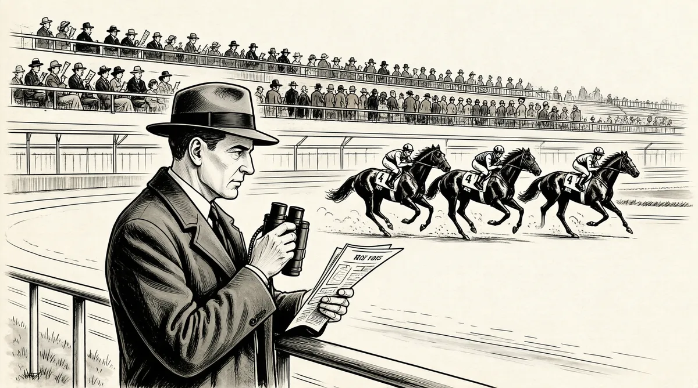

第13章 赛马场规则

沃伦的卡内基行为测试是在进行预期和预测——对人类的天性进行数学实验，他所收集的数据说明了卡内基正确的概率。
这种思考方式扩展了沃伦孩童时计算赞美诗歌作者的寿命概率的兴趣爱好。不过，他对寿命的兴趣并不只是抽象概念。沃伦极为喜爱的欧内斯特·巴菲特在1946年9月过世，终年69岁，当时霍华德一家正在奥马哈进行霍华德的第三次竞选，沃伦16岁。在沃伦的4个隔代长辈中，只有73岁的斯特拉尚在人世，不过是在诺福克州立医院里。早在欧内斯特过世前的很长一段时间里，沃伦就对自己的生命年限忧心忡忡，家里最新发生的这些事根本无法缓解他脑子里对寿命或是精神病的苦思冥想。不过，沃伦对预测的热情早就以一种萌芽状态出现，并扩展到了很多其他的方面。这种热情甚至产生于他懂得这个词的意思之前，可以追溯到当他还是一个小孩子的时候，玩儿弹珠、记车牌号、收集瓶盖以及用指纹器采集修女的指纹。
预测艺术要以信息为基础，关键在于比其他人拥有更多的信息，然后正确地分析，理性地使用。还是个孩子的时候，沃伦就在阿克萨本赛马场中首次进行了预测。鲍勃·拉塞尔的母亲将他们带入了赛马的天地。
沃伦和鲁斯年纪太小，不能下注。不过，他们很快就找到了赚钱的方法。赛马场脏兮兮的地板上到处是烟屁股、啤酒沫、旧赛程单和热狗残屑，在这些东西当中还有几千张被丢掉的投注票，像森林里地上的蘑菇一样露出头。两个男孩把自己变成了寻菇犬。
他们把赛马叫作“弯腰屈身运动”。每个赛季开始时，你会看到那些只在电影里看过的赛马人。他们认为，如果买中的马只跑了第二或第三名，那就赢不了钱，所以他们会扔掉第二、第三名的下注票。然而一场有争议的赛马可能会让你有所斩获。有一盏小灯会亮，这表示“有争议”或是“抗议”。这个时候，有些人也会丢掉下注票，而我们则开始大捡特捡地上的票。我们捡票的时候甚至都不会去看其他人一眼。晚上，我们会整理捡到的票。可真恶心，因为人们在地上吐痰。不过，我们觉得特别好玩。如果我找到一张赢钱的票，我的艾丽斯姑妈——她对赛马可是一点儿兴趣都没有——会帮我们去兑成现金，因为小孩子不能去换钱。
沃伦总想去赛马场，拉塞尔太太不能一直带他去。“我父亲从来不去那里，”沃伦说，“他从不相信赛马这回事。”不过，父母会请沃伦的叔公、家里的怪老头弗兰克带他去。弗兰克很久之前就和欧内斯特和好了，最后娶了一个被家里人称为“淘金女”的女人。1弗兰克对赛马不是特别感兴趣，不过因为他的侄孙子沃伦想去，所以他就带他去了赛马场。
在赛马场，沃伦学会了一点儿看马经，这为他开启了一个全新的世界。预测赛马结果综合了沃伦非常擅长的两件事：收集信息和数学计算。除了赢的马有4条腿、在跑道上奔跑之外，赛马和玩儿21点时候的计数没什么不同。很快，沃伦和鲁斯就有了足够的了解并写出了自己的马经，他们灵机一动，将其称为“稳健之选”。
我们侥幸成功了一阵。我们出的马经并非最畅销的，我的意思是，这是两个小孩子卖的东西，而且这东西还是我们在我家地下室里用一台老式打字机弄出来的。当时的局限是复写纸不够多，我可能只弄得到5张左右的复写纸。不过，我还有打字机，鲍勃·拉塞尔和我把赛马的名次预测出来，然后打印成稿。
我们去赛马场叫卖，“快来买《稳健之选》吧”。不过，《蓝色马经》的销量最好，而且价格比较贵，赛马场会从中抽佣金。而我们的卖25美分，属于打折商品。他们很快就不让我们卖《稳健之选》了，因为除了我们之外，他们对赛马场卖的所有东西都可以宰上一笔。
当巴菲特家搬到华盛顿哥伦比亚特区后，对沃伦来说，唯一的好处就是他有机会提高他的预测技巧了。
我了解到，国会议员有权使用国会图书馆——里面有所有曾经被记录成文字的东西。因此，当我们来到华盛顿，我说：“爸爸，我就想要一样东西。我想让你去国会图书馆把里面所有和赛马预测有关的书都借出来。”我父亲说：“一个新来的国会议员做的第一件事就是想要所有和赛马预测相关的书，他们会觉得这很奇怪。难道你不这么认为吗？”我说：“爸爸，是谁去乡村集市为你的竞选奔走？是谁待在屠宰加工厂，随时候命去报警，以防不测？今后两年，你还需要再参加竞选，你还会需要我。那么，现在是两清的时候了。”于是，父亲就给我找了几百本关于赛马预测的书。2
我要做的就是看这些书。我去了芝加哥的克拉克北大街的一个地方，在那里你可以买到过去的赛马记录，很便宜。它们都是过去的东西，谁还会需要呢？我会查看这些记录，第一天用我的预测方法进行预测，第二天看是否有效。我每天都测试自己的预测能力，测试我脑子里所有不同的系统方法。
在预测赛马结果方面，存在两种类型的方法。一类是从赛马的速度出发，即速度型；一类是以赛马赛跑的级别分析，即级别型。速度型专业赌马人会找出过去获胜次数最多的赛马。通常，速度最快的赛马会成为冠军。而在级别型专业赌马人看来，如果一匹马和一匹价值10000美元的马赛跑过，而且表现不错，那么当它和一匹价值5000美元的马赛跑，它一定能胜出。
在赛马比赛中，搞明白这两种类型的赌马人是很有好处的。不过，在那个时候，我基本上属于第一种类型。我一开始就是从数字分析入手的。
通过测试、思考和观察，沃伦发现了赛马的规律：第一轮赛跑结束后，没人会就此罢手；不要以为输到底还能把钱赢回来。
赛马场靠的就是人们不停歇地下注，直到他们输钱为止。难道一个出色的专业赌马人不能对这些规律善加利用，并赢到钱吗？
预测赛马的输赢也如同赛马本身。不过，那时我还没有形成精准和详细的理念，我还只是一个小孩。
赌马在华盛顿随处可见。
我去父亲办公室的次数相当多。实际上，那里有一幢老式国会办公楼，里面有一个赌注登记处。你可以走到电梯通道处，大叫一声“萨米”之类的名字，然后会有个男孩走过来，记下你的赌注。
我以前会整理笔记，给那些想要在普利尼斯站之类的比赛上赌马的人。这是我最喜欢的赛马游戏的一部分，我可以得到15%的利润而没有任何风险。你知道，我父亲想方设法想要控制这一切。这事他也有点儿感兴趣，不过他也明白这事会怎样转向一个错误的方向。
在暑假里，沃伦回到奥马哈，去阿克萨本赛马场赌马，这次是和他朋友斯图·埃里克森一起。3再次回到华盛顿的时候，他找到一位朋友和他一起去赛马场，而这位朋友可以提高他的赌马技术。鲍勃·德韦尔是沃伦的高中高尔夫球教练，一位有点儿啤酒肚、很有胆魄的年轻人。他在学校放假时销售人寿保险、冰柜和其他东西所挣的钱比他当老师拿的薪水还多。4高尔夫球队的其他成员都认为德韦尔对人粗暴、脾气暴躁，但是他对沃伦很好，因为沃伦的行事作风和他相似，而且打高尔夫球的时候非常有激情，尽管他的眼镜总是会蒙上一层雾气。
一天，沃伦请德韦尔带他去赛马场。德韦尔说沃伦需要得到父母的同意。“第二天早上，”德韦尔说，“他一大早就来了，很高兴的样子，兴冲冲地过来找我，手里拿着他母亲写的一张纸条，上面说他去赛马场完全没问题。”然后，德韦尔给沃伦写了一张假的请假条，这样沃伦就不用去上课了。5接着，他们搭乘切萨皮克—俄亥俄铁路的火车，从马里兰州的银泉出发，前往西弗吉尼亚的查尔斯顿，去赛马场磨炼沃伦的赌马技术。德韦尔教会沃伦如何高明地阅读最重要的马经——《每日赛讯》。
我会提前拿到《每日赛讯》，找出每匹马跑赢比赛的可能性。然后，我把表示概率的百分比和独赢赔率相比较。不过，我先不看独赢赔率，以免自己先入为主产生偏见。有时，你会发现一匹马胜出的独赢赔率出现偏差，偏离实际的可能性。比如你认为一匹马有10%的胜利机会，但其实它成功的机会只有1/15。
投注方法越简单越好。你可以让人们根据骑师的肤色、生日投下赌注，还可以根据赛马的名字投注。当然，关键在于没有人进行实际分析，而你掌握着大量的数据。因此，当我还是个小孩的时候，我就疯狂地研究《每日赛讯》。
比尔·格雷和沃伦一起在伍德罗·威尔逊高中念书，他比沃伦低一个年级，不过年纪要大一点儿，两人一起去过几次赛马场。“沃伦对数字非常敏感，非常健谈，6人也非常开朗，对人友好。我们一起聊棒球、击球率等体育内容。”7
“沃伦一下火车，就知道自己要挑哪些马。到了赛马场，他会说，这匹马太重了，或者说，这匹马在上几次比赛中表现不够好，跑赢的次数不够多。沃伦知道如何去判断一匹马。”沃伦投的赌金在6到10美元之间，有时候买得很准。沃伦只在独赢赔率很好的时候才下大赌注，但是，他会冒风险把送报赚的辛苦钱投到看中的赛马身上。“在比赛进行中，他可能会改变主意，”格雷说，“不过，你知道吗？对于一个16岁的男孩来说，这并不是一件平常的事。”
有一次，沃伦自己一个人去查尔斯顿。他在第一轮比赛中输了，但他没有就此回家。他不停地下注，又不停地输，直到他输的钱超过了175美元——差不多输了个精光。
我回到家，去了HotShoppe便利店，给自己点了他们提供的最大份的东西——一份巨大的奶油巧克力圣代冰激凌，这花掉了我剩下的所有钱。我一边吃，一边算我得送多少份报纸才能把我输掉的钱挣回来。我不得不工作一周多才能赚回这些钱，而我损失掉这些钱是因为一些愚蠢的原因。
我不应该每场比赛都下注。我犯了最严重的错误，输钱了，而我认为我那天能把输的钱赢回来。之前说过的第一条规则是第一轮比赛后，没有人就此罢手。第二条规则是不要以为输到底还能把钱赢回来。你知道，这是非常基本的道理。
沃伦意识到他做出了一个情绪化的决定吗？
噢，是的。噢，我觉得很恼火。那是我最后一次做这样的事。
[1]巴菲特家里人都认为这女人是想从弗兰克身上捞点儿好处。——译者注
[2]这就是说，这匹马的赢钱概率只有6.7%。因此，如果它胜出了，那么所得到的钱会比这匹马的赛跑记录所显示的概率高出50%。一个专业的赌马人甚至会对赛场里最差的一匹马下这样的赌注，因为相较于独赢赔率，预期的赢钱金额非常大。这就是“赔率大于概率”。——编者注